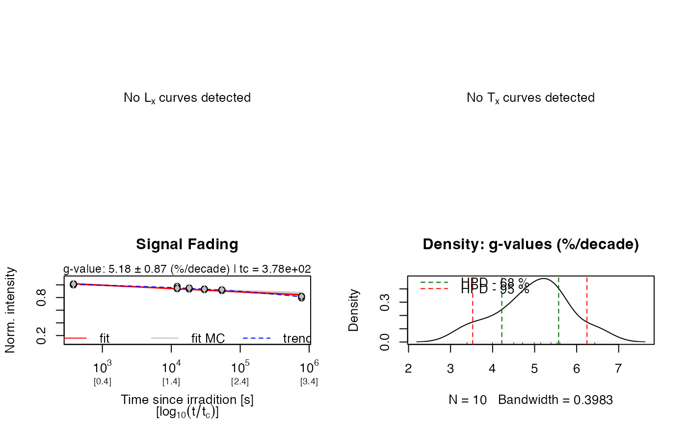
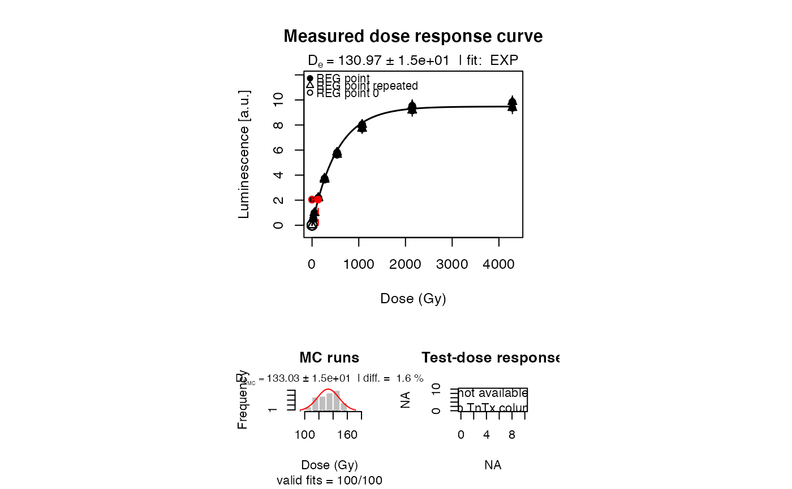
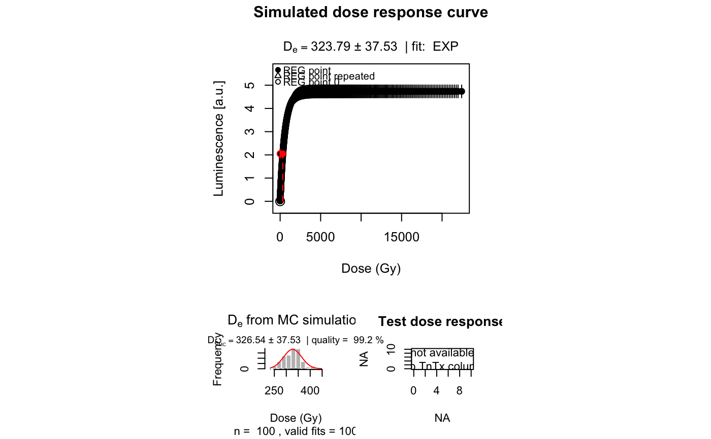
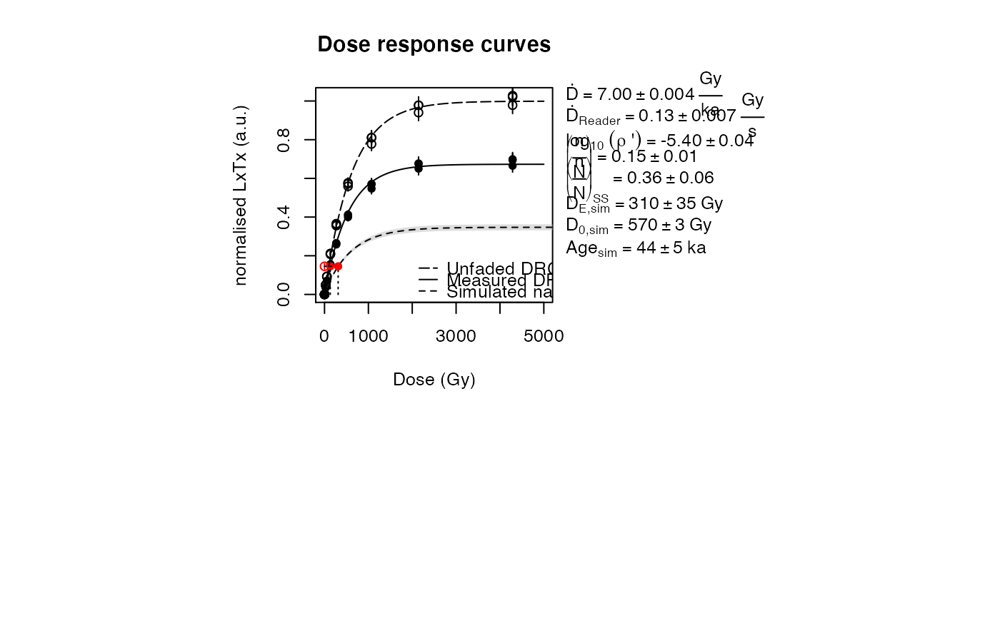

A function to calculate the expected sample specific fraction of saturation based on the model of Huntley (2006) using the approach as implemented in Kars et al. (2008) or Guralnik et al. (2015).
data.frame (required):
A data.frame with one of the following structures:
A three column data frame with numeric values on a) dose (s), b) LxTx and
c) LxTx error.
If a two column data frame is provided it is automatically
assumed that errors on LxTx are missing. A third column will be attached
with an arbitrary 5 \
Can also be a wide table, i.e. a data.frame with a number of columns divisible by 3 and where each triplet has the aforementioned column structure.
(optional)
| dose (s)| LxTx | LxTx error |
| [ ,1] | [ ,2]| [ ,3] |
|---------|------|------------|
[1, ]| 0 | LnTn | LnTn error | (optional, see arg 'LnTn')
[2, ]| R1 | L1T1 | L1T1 error |
... | ... | ... | ... |
[x, ]| Rx | LxTx | LxTx error |
NOTE: The function assumes the first row of the function to be the
Ln/Tn-value. If you want to provide more than one Ln/Tn-value consider
using the argument LnTn.
data.frame (optional):
This argument should only be used to provide more than one Ln/Tn-value.
It assumes a two column data frame with the following structure:
| LnTn | LnTn error |
| [ ,1] | [ ,2] |
|--------|--------------|
[1, ]| LnTn_1 | LnTn_1 error |
[2, ]| LnTn_2 | LnTn_2 error |
... | ... | ... |
[x, ]| LnTn_x | LnTn_x error |The function will calculate a mean Ln/Tn-value and uses either the
standard deviation or the highest individual error, whichever is larger. If
another mean value (e.g. a weighted mean or median) or error is preferred,
this value must be calculated beforehand and used in the first row in the
data frame for argument data.
NOTE: If you provide LnTn-values with this argument the data frame
for the data-argument must not contain any LnTn-values!
numeric (required):
The density of recombination centres (\(\rho\)') and its error (see Huntley 2006),
given as numeric vector of length two. Note that \(\rho\)' must not be
provided as the common logarithm. Example: rhop = c(2.92e-06, 4.93e-07).
numeric (required):
Environmental dose rate and its error, given as a numeric vector of length two.
Expected unit: Gy/ka. Example: ddot = c(3.7, 0.4).
numeric (required):
Dose rate of the irradiation source of the OSL reader and its error,
given as a numeric vector of length two.
Expected unit: Gy/s. Example: readerDdot = c(0.08, 0.01).
logical (with default):
If TRUE (the default) all measured and computed LxTx values are
normalised by the pre-exponential factor A (see details).
character (with default):
Fit function of the dose response curve. Can either be EXP (the default)
or GOK. Note that EXP (single saturating exponential) is the original
function the model after Huntley (2006) and Kars et al. (2008) was
designed to use. The use of a general-order kinetics function (GOK)
is an experimental adaption of the model and should be used
with great care.
numeric (with default):
Only applicable for fit.method = 'GOK'. A vector of length 3 that
contains the lower bound values for fitting the general-order kinetics
function using minpack.lm::nlsLM. In most cases, the default values
(c(-Inf, -Inf, -Inf)) are appropriate for finding a best fit, but
sometimes it may be useful to restrict the lower bounds to e.g.
c(0, 0, 0). The values of the vector are for parameters
a, D0 and c in that particular order (see details in
plot_GrowthCurve).
logical (with default):
If TRUE (the default) various parameters provided by the user
and calculated by the model are added as text on the right-hand side of the
plot.
logical (with default): enables/disables plot output.
Further parameters:
verbose logical: Show or hide console output
n.MC numeric: Number of Monte Carlo iterations (default = 100000).
Note that it is generally advised to have a large number of Monte Carlo
iterations for the results to converge. Decreasing the number of iterations
will often result in unstable estimates.
All other arguments are passed to plot and plot_GrowthCurve.
An RLum.Results object is returned:
Slot: @data
| OBJECT | TYPE | COMMENT |
results | data.frame | results of the of Kars et al. 2008 model |
data | data.frame | original input data |
Ln | numeric | Ln and its error |
LxTx_tables | list | A list of data.frames containing data on dose,
LxTx and LxTx error for each of the dose response curves.
Note that these do not contain the natural Ln signal, which is provided separately. |
fits | list | A list of nls objects produced by minpack.lm::nlsLM when fitting the dose response curves |
Slot: @info
| OBJECT | TYPE | COMMENT |
call | call | the original function call |
args | list | arguments of the original function call |
This function applies the approach described in Kars et al. (2008) or Guralnik et al. (2015),
which are both developed from the model of Huntley (2006) to calculate the expected sample
specific fraction of saturation of a feldspar and also to calculate fading
corrected age using this model. \(\rho\)' (rhop), the density of recombination
centres, is a crucial parameter of this model and must be determined
separately from a fading measurement. The function analyse_FadingMeasurement
can be used to calculate the sample specific \(\rho\)' value.
Kars et al. (2008) - Single saturating exponential
To apply the approach after Kars et al. (2008) use fit.method = "EXP".
Firstly, the unfaded \(D_0\) value is determined through applying equation 5 of Kars et al. (2008) to the measured \(\frac{L_x}{T_x}\) data as a function of irradiation time, and fitting the data with a single saturating exponential of the form:
$$LxTx(t^*) = A \phi(t^*) \{1 - exp(-\frac{t^*}{D_0}))\}$$
where
$$\phi(t^*) = exp(-\rho' ln(1.8 \tilde{s} t^*)^3)$$
after King et al. (2016) where \(A\) is a pre-exponential factor,
\(t^*\) (s) is the irradiation time, starting at the mid-point of
irradiation (Auclair et al. 2003) and \(\tilde{s}\) (\(3\times10^{15}\) s\(^{-1}\)) is the athermal frequency factor after Huntley (2006).
Using fit parameters \(A\) and \(D_0\), the function then computes a natural dose
response curve using the environmental dose rate, \(\dot{D}\) (Gy/s) and equations
[1] and [2]. Computed \(\frac{L_x}{T_x}\) values are then fitted using the
plot_GrowthCurve function and the laboratory measured LnTn can then
be interpolated onto this curve to determine the fading corrected
\(D_e\) value, from which the fading corrected age is calculated.
Guralnik et al. (2015) - General-order kinetics
To apply the approach after Guralnik et al. (2015) use fit.method = "GOK".
The approach of Guralnik et al. (2015) is very similar to that of Kars et al. (2008), but instead of using a single saturating exponential the model fits a general-order kinetics function of the form:
$$LxTx(t^*) = A \phi (t^*)(1 - (1 + (\frac{1}{D_0}) t^* c)^{-1/c})$$
where \(A\), \(\phi\), \(t^*\) and \(D_0\) are the same as above and \(c\) is a dimensionless kinetic order modifier (cf. equation 10 in Guralnik et al., 2015).
Level of saturation
The calc_Huntley2006 function also calculates the level of saturation (\(\frac{n}{N}\)) and the field saturation (i.e. athermal steady state, (n/N)_SS) value for the sample under investigation using the sample specific \(\rho\)', unfaded \(D_0\) and \(\dot{D}\) values, following the approach of Kars et al. (2008).
Uncertainties
Uncertainties are reported at \(1\sigma\) and are assumed to be normally
distributed and are estimated using Monte-Carlo re-sampling (n.MC = 1000)
of \(\rho\)' and \(\frac{L_x}{T_x}\) during dose response curve fitting, and of \(\rho\)'
in the derivation of (\(n/N\)) and (n/N)_SS.
Age calculated from 2D0 of the simulated natural DRC
In addition to the age calculated from the equivalent dose derived from
Ln/Tn projected on the simulated natural dose response curve (DRC), this function
also calculates an age from twice the characteristic saturation dose (D0)
of the simulated natural DRC. This can be a useful information for
(over)saturated samples (i.e., no intersect of Ln/Tn on the natural DRC)
to obtain at least a "minimum age" estimate of the sample. In the console
output this value is denoted by "Age @2D0 (ka):".
This function has BETA status, in particular for the GOK implementation. Please verify your results carefully
0.4.2
King, G.E., Burow, C., Kreutzer, S., 2023. calc_Huntley2006(): Apply the Huntley (2006) model. Function version 0.4.2. In: Kreutzer, S., Burow, C., Dietze, M., Fuchs, M.C., Schmidt, C., Fischer, M., Friedrich, J., Mercier, N., Philippe, A., Riedesel, S., Autzen, M., Mittelstrass, D., Gray, H.J., Galharret, J., 2023. Luminescence: Comprehensive Luminescence Dating Data Analysis. R package version 0.9.23. https://CRAN.R-project.org/package=Luminescence
Kars, R.H., Wallinga, J., Cohen, K.M., 2008. A new approach towards anomalous fading correction for feldspar IRSL dating-tests on samples in field saturation. Radiation Measurements 43, 786-790. doi:10.1016/j.radmeas.2008.01.021
Guralnik, B., Li, B., Jain, M., Chen, R., Paris, R.B., Murray, A.S., Li, S.-H., Pagonis, P., Herman, F., 2015. Radiation-induced growth and isothermal decay of infrared-stimulated luminescence from feldspar. Radiation Measurements 81, 224-231.
Huntley, D.J., 2006. An explanation of the power-law decay of luminescence. Journal of Physics: Condensed Matter 18, 1359-1365. doi:10.1088/0953-8984/18/4/020
King, G.E., Herman, F., Lambert, R., Valla, P.G., Guralnik, B., 2016. Multi-OSL-thermochronometry of feldspar. Quaternary Geochronology 33, 76-87. doi:10.1016/j.quageo.2016.01.004
Further reading
Morthekai, P., Jain, M., Cunha, P.P., Azevedo, J.M., Singhvi, A.K., 2011. An attempt to correct for the fading in million year old basaltic rocks. Geochronometria 38(3), 223-230.
## Load example data (sample UNIL/NB123, see ?ExampleData.Fading)
data("ExampleData.Fading", envir = environment())
## (1) Set all relevant parameters
# a. fading measurement data (IR50)
fading_data <- ExampleData.Fading$fading.data$IR50
# b. Dose response curve data
data <- ExampleData.Fading$equivalentDose.data$IR50
## (2) Define required function parameters
ddot <- c(7.00, 0.004)
readerDdot <- c(0.134, 0.0067)
# Analyse fading measurement and get an estimate of rho'.
# Note that the RLum.Results object can be directly used for further processing.
# The number of MC runs is reduced for this example
rhop <- analyse_FadingMeasurement(fading_data, plot = TRUE, verbose = FALSE, n.MC = 10)

## (3) Apply the Kars et al. (2008) model to the data
kars <- calc_Huntley2006(
data = data,
rhop = rhop,
ddot = ddot,
readerDdot = readerDdot,
n.MC = 25)
#>



#>
#> [calc_Huntley2006()]
#>
#> -------------------------------
#> (n/N) [-]: 0.14 ± 0.02
#> (n/N)_SS [-]: 0.36 ± 0.07
#>
#> ---------- Measured -----------
#> DE [Gy]: 130.97 ± 15.09
#> D0 [Gy]: 539.01 ± 18.77
#> Age [ka]: 18.71 ± 2.35
#>
#> ---------- Un-faded -----------
#> D0 [Gy]: 639.61 ± 13.4
#>
#> ---------- Simulated ----------
#> DE [Gy]: 253.66 ± 41.84
#> D0 [Gy]: 611.98 ± 4.91
#> Age [ka]: 36.24 ± 6.25
#> Age @2D0 [ka]: 174.85 ± 8.86
#> -------------------------------
#>
if (FALSE) {
# You can also provide LnTn values separately via the 'LnTn' argument.
# Note, however, that the data frame for 'data' must then NOT contain
# a LnTn value. See argument descriptions!
LnTn <- data.frame(LnTn = c(1.84833, 2.24833),
LnTn.error = c(0.17, 0.22))
LxTx <- data[2:nrow(data), ]
kars <- calc_Huntley2006(data = LxTx,
LnTn = LnTn,
rhop = rhop,
ddot = ddot,
readerDdot = readerDdot,
n.MC = 25)
}